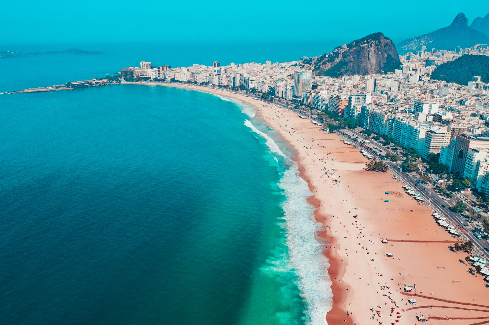
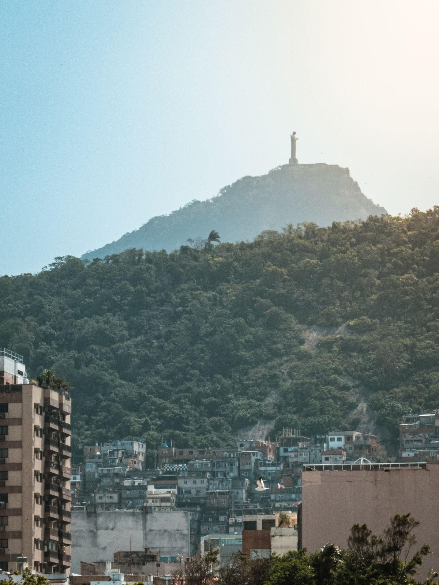
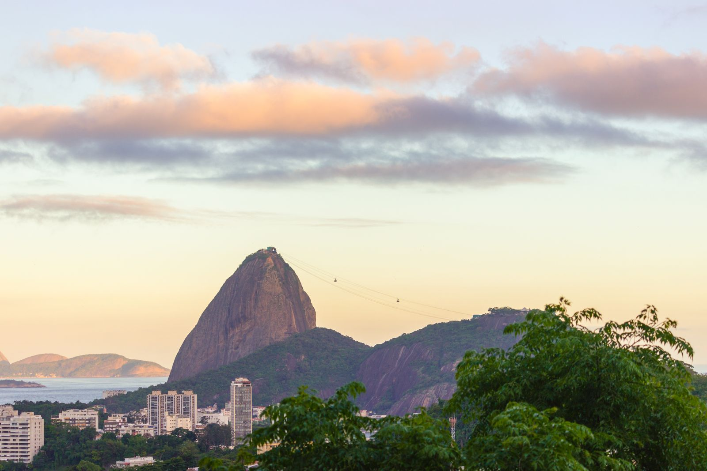
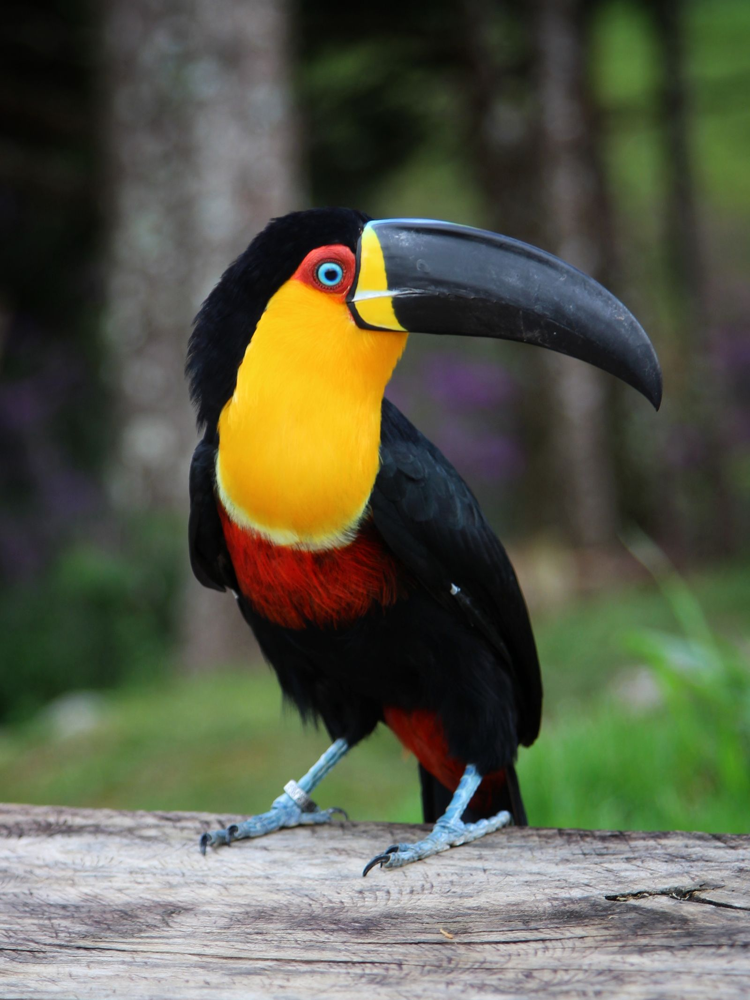
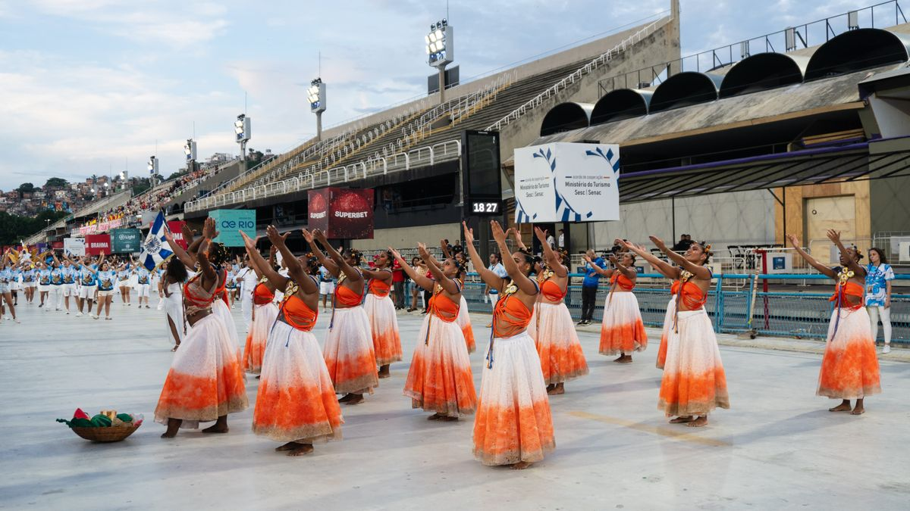
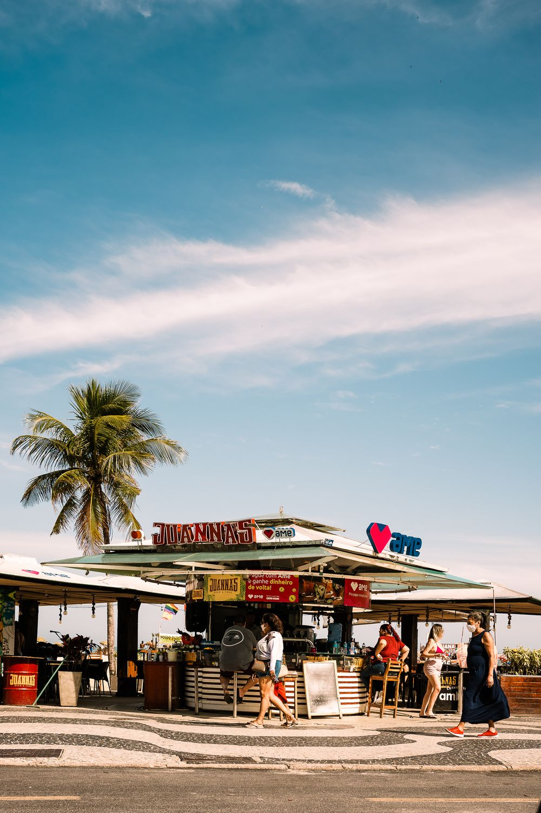
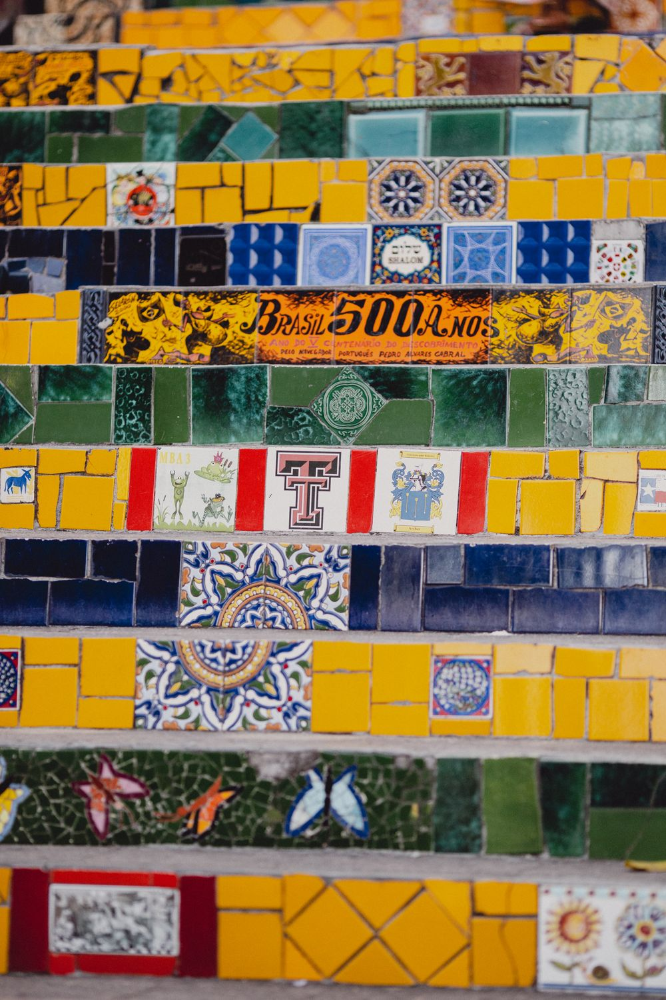

Praias e litoral
São mais de 600 km de costa, de Paraty a Campos, com praias urbanas, ilhas e águas cristalinas.
Ver destinos de praia →Praias famosas no mundo inteiro, montanhas cobertas de Mata Atlântica, cidades históricas e o samba que embala o Brasil. Venha conhecer o estado que encanta quem chega.
O estado do Rio de Janeiro fica no Sudeste do Brasil e reúne, em pouco espaço, uma enorme variedade de paisagens: o litoral da Costa Verde e da Região dos Lagos, as serras de Petrópolis, Teresópolis e Itatiaia e a capital, cercada por florestas e pela Baía de Guanabara.
Foi capital do Brasil por quase dois séculos e guarda essa história em museus, igrejas e palácios. Hoje é um dos destinos mais visitados do país.
Conheça a região →
Natureza, história e cultura se encontram em cada canto do estado.

São mais de 600 km de costa, de Paraty a Campos, com praias urbanas, ilhas e águas cristalinas.
Ver destinos de praia →
Os dois cartões-postais mais famosos do Brasil, com vistas de tirar o fôlego da Baía de Guanabara.
Ler curiosidades →
Tucanos, micos-leões-dourados e florestas que cobrem as serras e até o meio da cidade.
Ver na galeria →
Berço do samba e palco do maior carnaval do mundo, o Rio respira música o ano inteiro.
Conhecer o carnaval →
Feijoada de sábado, biscoito de polvilho, mate gelado e o petisco no quiosque de frente para o mar.
Saber mais →
Da capital às serras e à Costa Verde: cidades históricas, ilhas e parques nacionais.
Ver destinos →Quatro lugares que mostram a cara do estado: a capital, a Costa Verde, a Região dos Lagos e a Serra. Clique em um destino para ver as fotos.
Ver todos os destinos →lembranças da Cidade Maravilhosa
Ver todas as imagens →